StreamUPC
Un nou concepte de
col·laboració
Néstor Malet Montolío
Director
Jaume MoralRos
Co-Director
Albert ObiolsVives
Ponent
Josep CasanovasGarcia
UPCnet uTalk
App d'iOS de la xarxa social de la UPC.

Índex
Introducció


Premi Davyd Luque:
- UPCesfer@ (2008)
- Directori UPC (2009)
- U4U - University for you (2011)
MAX: Motor d'activitat social


Gestió del projecte
Projecte: Metodologia
Scrum
Projecte: Scrum
 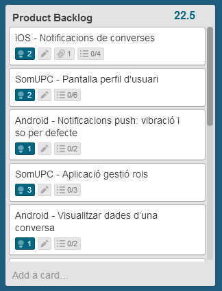
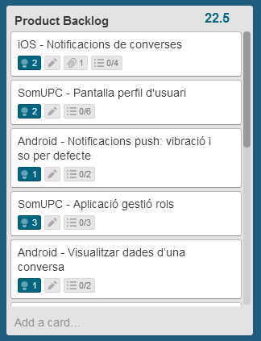
 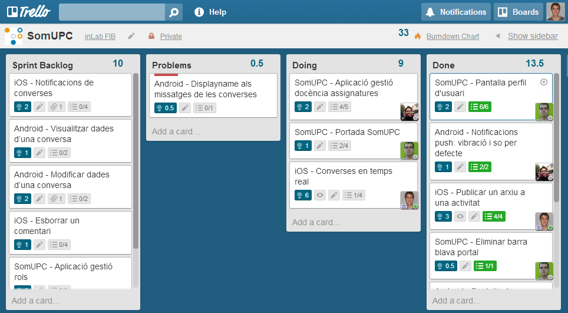
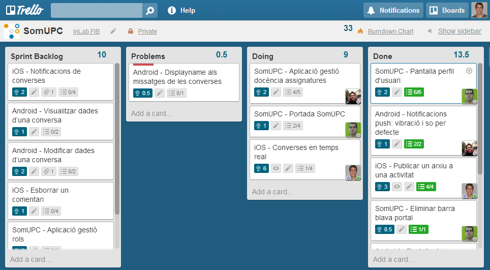

Projecte: Abast
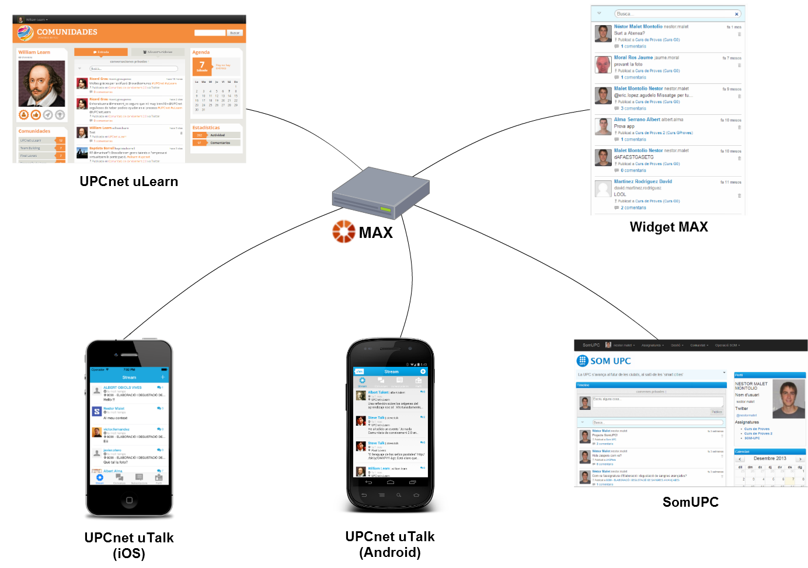Projecte: Planificació
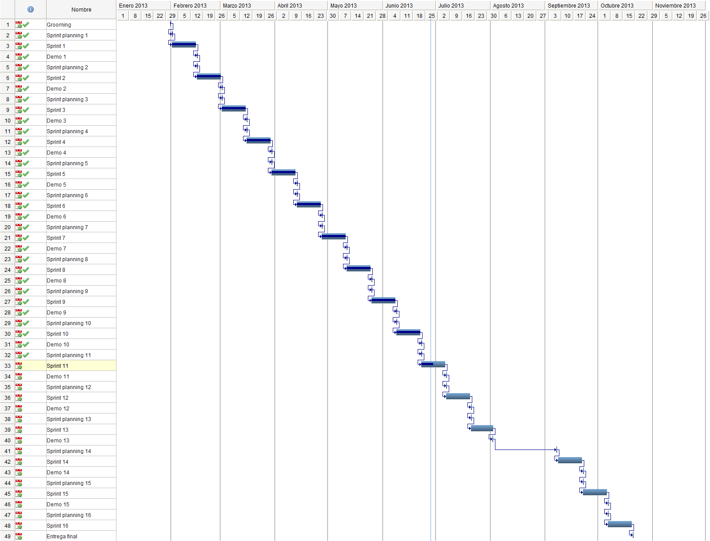Projecte: Costos
Costos directes
| Recursos | Cost |
|---|---|
| Humans | 11.205 € |
| Materials | 56 € |
| Total | 11.261 € |
Cost total
| Costos | |
|---|---|
| Directes | 11.261 € |
| Indirectes | 788 € |
| Total | 12.049 € |
Especificació
Especificació: Històries d'usuari
9. Afegir una subscripció
Com a usuari registrat jo vull afegir noves subscripcions per a poder veure les activitats
publicades a un espai del que ara no estic subscrit.
Prioritat:65
Criteris d’acceptació:
- Vull afegir una nova subscripció a un context.
- No he de poder subscriurem a un context que no sigui públic.
- Se m’ha de confirmar si realment vull subscriurem al context.
- Si accepto, s’ha de crear la subscripció al context.
- Si cancel·lo, no s’ha de crear la subscripció.
Especificació: Model conceptual

Especificació: Requisits no funcionals
ReqNF. #:4
Nom:
Complir la App Review Guidelines
Descripció:
El producte s'ha d’adaptar a la guia de revisió d’aplicacions d'Apple (App Review Guidelines)
Arquitectura
Arquitectura: Disseny gràfic


Arquitectura: Presentació
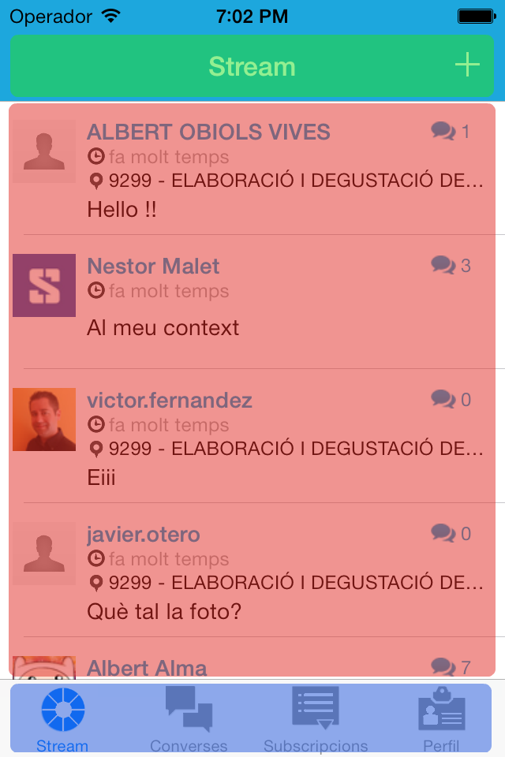Arquitectura: Desplegament
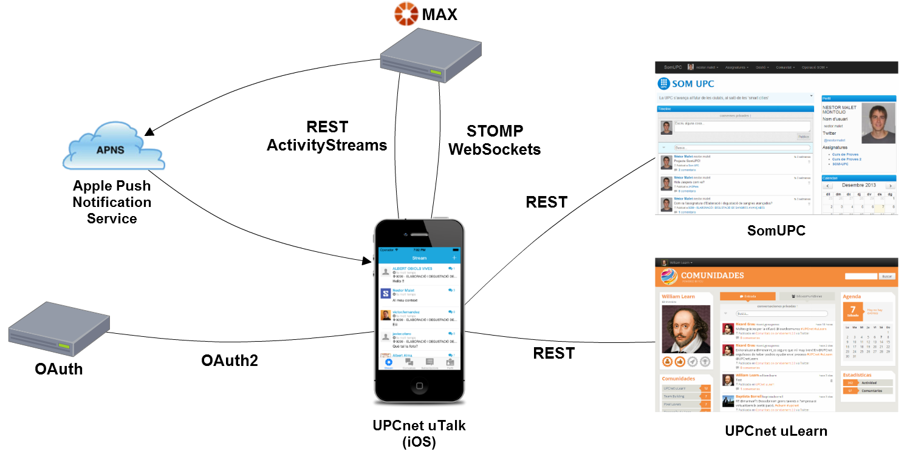Arquitectura: Distribució de l'aplicació
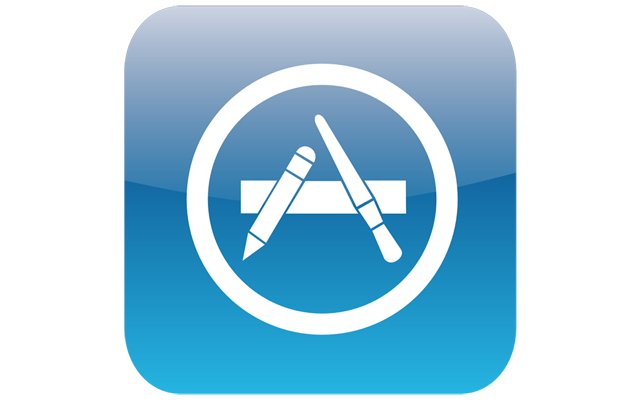
Demostració
Conclusions
- L'aplicació està disponible a l'App Store.
- Scrum ha ajudat a ...
- ... adaptar-se a les necessitats canviants.
- ... produir un producte millor per a l'usuari.
- Gran evolució del producte final (SomUPC).
- L'aplicació ja s'ha implantat a dues comunitats.